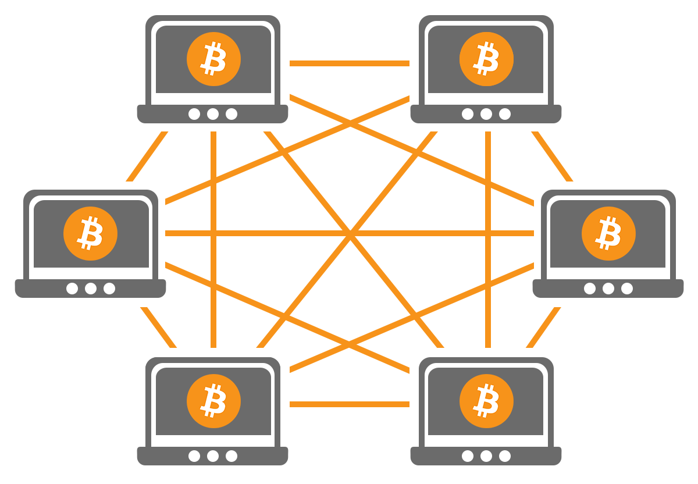

¿Qué es Peer-to-Peer(P2P)?
Las redes P2P o Peer-to-Peer son un tipo de redes descentralizadas. Redes que están formadas por cientos e incluso millones de ordenadores ubicados en todo el mundo. Todas ellas funcionando bajo un mismo protocolo de comunicaciones, con el objetivo de crear una enorme red para compartir información de cualquier índole. Si hoy podemos comprar bitcoins es gracias a este tipo de red.
Una red P2P, o peer-to-peer, es una red donde un grupo de personas o máquinas participan de forma completamente descentralizada. Es decir, es una red donde no hay un punto central de conexión o control, y donde las partes actúan de forma autónoma respondiendo a un protocolo de comunicaciones y consenso común. De esta forma, los integrantes de la red pueden intercambiar información de forma directa y sin intermediarios.
Para lograr este funcionamiento, las redes P2P se construyen sobre protocolos que se ejecutan sobre los protocolos de Internet (también conocido como TCP/IP). De allí que, a los protocolos P2P se le denomine protocolos de aplicación o Layer 7, según el modelo Open Systems Interconnection u OSI. Esto significa que los protocolos P2P necesitan para su funcionamiento, el uso de otros protocolos más abstractos a los fines de poder funcionar, pero que, al mismo tiempo, los hace más sencillos de construir y hacer funcionar.
Gracia a esto, los protocolos P2P, han sido ampliamente utilizados desde su creación para distintos usos. Algunos legales, otros un tanto grises, pero pese a ello, hay una cosa muy clara, los protocolos P2P son muy potentes y permiten la creación de estructuras descentralizadas, difícilmente censurables y de uso libre. Por esa razón, criptomonedas como Bitcoin fueron construidas sobre la base de protocolos P2P.
Tipos de redes P2P
Entre los tipos de redes P2P existentes podemos especificar los siguientes:
-
Red descentralizada y estructurada. Este tipo de redes son conocidas como redes P2P híbridas. En este tipo de redes no existe un directorio en un servidor central, sino que en su lugar existen una serie de nodos o peers, que tienen la capacidad de recibir peticiones de información y responder a las mismas para facilitar el acceso a los recursos. Para evitar la centralización de esta funcionalidad, los nodos o peer especiales pueden ser instalados y configurados por cualquier persona, buscando con ello que la misma comunidad de usuarios extienda la funcionalidad de la red y permita su correcto funcionamiento. Un buen ejemplo de este tipo de redes son las redes federadas como Diaspora o Mastodon.
-
Red descentralizada y no estructurada. En este tipo de redes P2P no existen ordenadores o nodos que funcionen como controladores centrales de peticiones. Por el contrario, cada nodo dentro de la red tiene las mismas funciones que el resto de nodos, por lo que cada nuevo nodo ejerce la misma autoridad que el resto. En este punto, redes como Bitcoin cumplen con esta características, puesto que cada nodo conectado tiene las mismas capacidades que el resto.
¿Cómo funciona una red P2P?
El funcionamiento de una red P2P es relativamente sencillo. Básicamente lo que se hace es construir un protocolo (lenguaje) de comunicaciones que permita a las personas que usan dicho software comunicarse de forma directa y sin intermediarios con otros computadores. Sin embargo, el mayor problema frente a la construcción de estos sistemas es; ¿Cómo diseñar un sistema que no necesite un directorio centralizado para comunicarse con otros computadores que ejecuten el mismo software?
Un problema complejo, pero la situación se puede solventar de una forma bastante efectiva con dos medidas bien definidas:
-
En primer lugar, hacer que el software sea capaz de compartir información de conexión sobre quienes ejecutan el mismo. Así, cada computador que ejecuta el software es capaz de tener un directorio de computadores conectados y servirse de ellos para conectarse al nodo que desea.
-
Incentivar la mayor descentralización posible de la red. Es decir, hacer que muchas personas ejecuten el software creando sus propios nodos, y por tanto aumentando el tamaño de la red. De esta manera, se mejora su alcance y las posibilidades de la misma.
Es decir, mientras más pares o peers (computadores ejecutando el software P2P) tenga la red, más posibilidades hay de que la red no pueda ser censurada, su funcionamiento será más resistente y, mejores capacidades tendrá la misma. En los primeros sistemas P2P, como USENET o IRC, los sistemas y sus conexiones se hacían conocer por medios escritos, llamadas, o el mismo sistema que tenía un tablero de pares a los cuales poder conectarse. Así, cada nuevo integrante en la red, tenía acceso a la lista de peers y se auto añadía para que otros pudieran establecer comunicación con ellos en caso de requerirlo. No solo eso, ese nuevo peer podía ser la puerta de entrada a la información de peers que pudieran bloquearse.
Pero la creación de redes más grandes como el IRC, DCC, DC++, Napster, Gnutella, BitTorrent e incluso Bitcoin cambió drásticamente esto. Ahora cada nodo se conectaba a un punto, obtienen una lista de peer iniciales (o nodos semillas). Y a partir de allí, cada nodo es capaz de recrear una lista propia de nodos que pertenecen a la red. Como resultado se obtiene una mejor resistencia a la censura y la red puede crecer más rápidamente.
Por supuesto, el funcionamiento de cada protocolo es distinto. IRC por ejemplo, es un sistema distribuido (casi centralizado) de servidores que pueden darte la capacidad de conectarte punto a punto con una persona. Pero DC+ y Gnutella, son completamente descentralizados, sus redes están pensadas para que de forma automática, la red se ajuste con la entrada y salida de nuevos nodos a la red.
Lo mismo pasa en Bitcoin, donde la red comenzó con una sola semilla, la iniciada por Satoshi Nakamoto, y desde entonces, la red ha ido creciendo paulatinamente para convertirse en una red con un tamaño superior a los 10 mil nodos en activos. Por supuesto, el objetivo de Bitcoin es distinto al de una red como Gnutella, pero los principios del protocolo se mantienen: comunicar a dos partes sin intermediarios.
Ventajas y Desventajas de esta tecnología
Ventajas
-
Una red P2P es resistente a la censura. Una red P2P altamente descentralizada es prácticamente imposible de censurar.
-
Ofrecen un resiliencia inigualable. Si un nodo cae, otro nodo puede tomar su lugar. Por eso dicen que las redes P2P pueden sobrevivir a una catástrofe nuclear, porque estas pueden destruir muchos nodos, pero si solo uno sobrevive, la red puede reconstruirse por completo.
-
Las redes P2P pueden llevar a soluciones de escalabilidad potentes para presentar servicios únicos con alcance global.
-
Al no depender de entidades centrales, las P2P generan más confianza en sus usuarios.
-
Ofrecen un alto nivel de ancho de banda. Esto gracias a que aprovechan el ancho de banda de cada participantes, para transformarlo en propio de la red.
-
Sirven para transmitir información digital de cualquier tipo. Desde tu canción favorita a cientos de millones de dólares, en segundos.
Desventajas
-
Una red P2P es resistente a la censura, pero no te hace anónimo a menos que esté diseñada para ello, incluso, si esa red usa cifrado. El mejor ejemplo es BitTorrent, donde los ISP pueden detectar el uso del protocolo, y con ello advertir a las autoridades de la descarga ilegal por parte de un usuario.
-
El diseño de las redes P2P generan que a mayor tamaño aumente la latencia. Es decir, para que una información llegue a todas las partes que forma la red, se tomará más tiempo en una red P2P de gran tamaño que en una de menor tamaño. De allí que se busquen nuevos algoritmos y protocolos que ayuden a superar este problema.
-
Los protocolos P2P tienen una serie de problemas estructurales conocidos. Casos como los ataques MITM para tomar el control de nodos, debido a que estos deben estar conectados todo el tiempo de forma pública son uno de estos fallos. También los protocolos son susceptibles a ataques de enrutamiento o cosas tan sigilosas como un ataque Eclipse o un ataque Erebus.
P2P para resolver los problemas del dinero digital
Lo mejor de todo, es que Bitcoin con su sistema P2P ha logrado crear un sistema de contabilidad distribuido en el que problemas como el doble gasto son cosas del pasado. El doble gasto, era uno de los problemas principales del dinero digital. La posibilidad de duplicar el dinero y falsificarlo, era algo que no había tenido solución hasta que Satoshi Nakamoto diseño la blockchain y su protocolo P2P para Bitcoin.
Desde entonces somos capaces de usar criptomonedas con total seguridad sabiendo que nuestro dinero no solo está en un protocolo abierto, transparente y libre, sino que también jamás podrá ser falsificado. Y todo ello porque cada nodo tiene un historial de transacciones de la red, siendo testigo de cada operación en la misma. Esta enorme red de testigos, permanece como un registro inmodificable de todo lo que sucede y nos da la seguridad de que el sistema no es manipulable.
Algo realmente útil y que permite transformar a Bitcoin en un dinero digital seguro, el más seguro y transparente de todos.